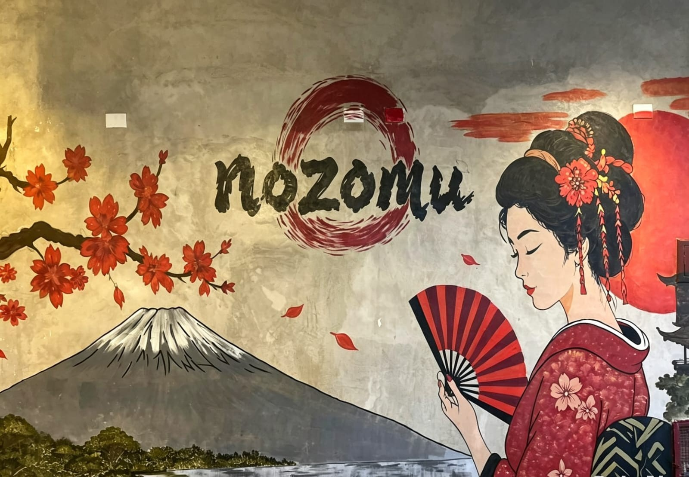
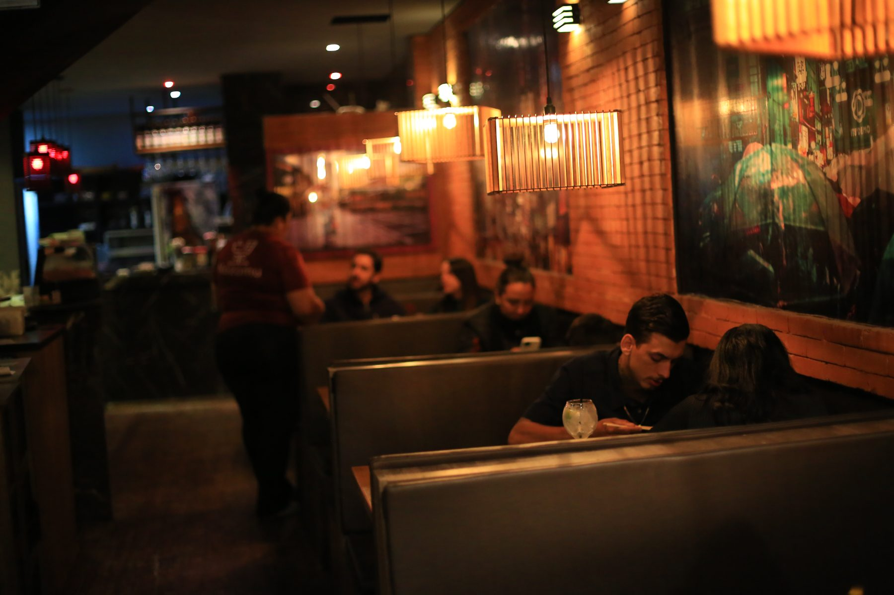
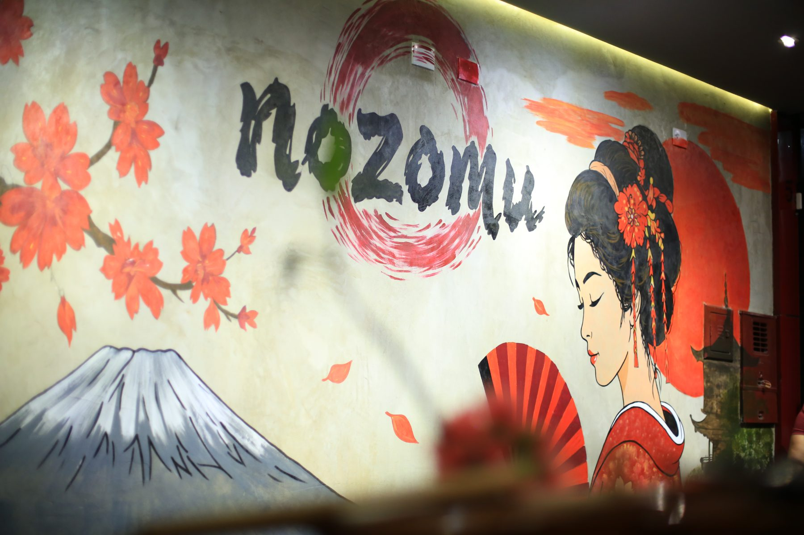
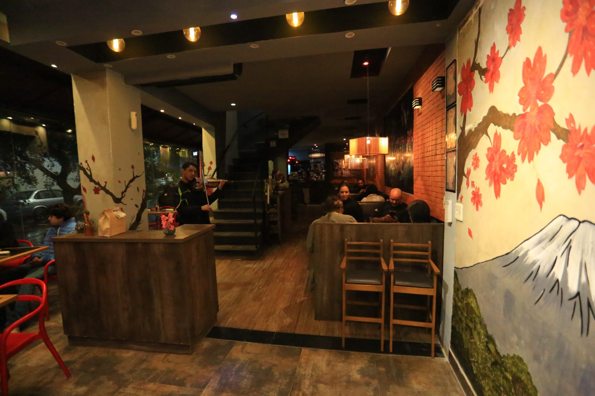
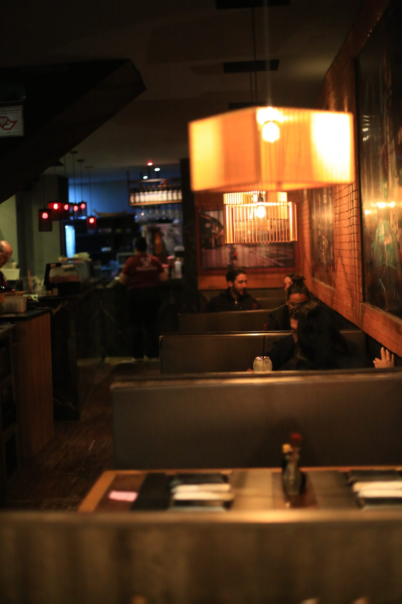
Qualidade e sabor, juntos no mesmo prato.
Na cultura oriental, o ideograma Nozomu (望) carrega um significado forte e inspirador: desejo e esperança. Foi exatamente com esse propósito que abrimos nossas portas: para ser o destino certo de quem deseja viver a verdadeira essência da culinária japonesa, unindo tradição, frescor e inovação.
O salão é pensado para a noite: luz baixa, murais pintados à mão, madeira e tijolo. Nas mesas, o rodízio Premium chega sem pressa — peça por peça, no ritmo de quem veio para ficar.
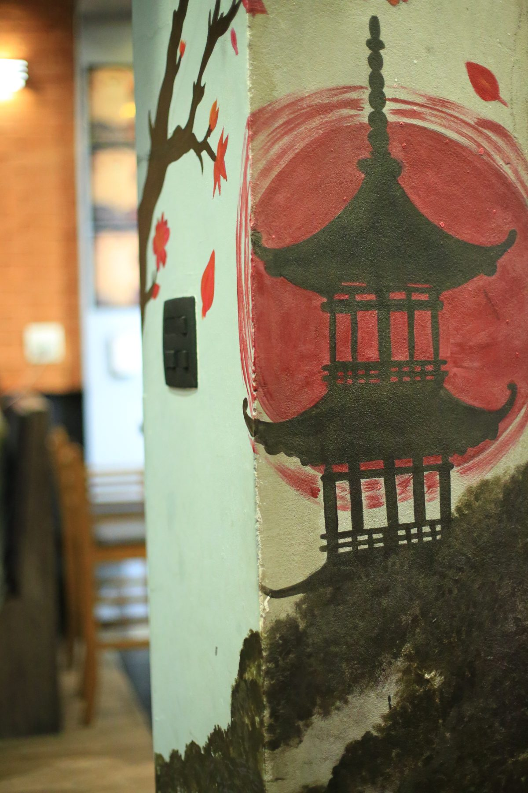
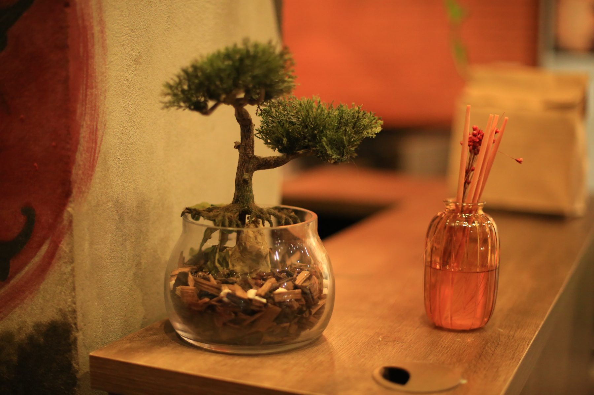
Todas as mulheres têm R$ 20 de desconto no rodízio, no almoço e no jantar.
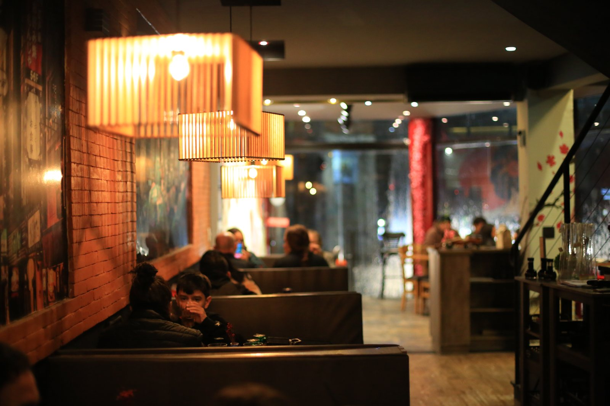
Mesas e boxes sob luminárias de bambu, murais pintados à mão e tijolo aparente. O coração do restaurante.
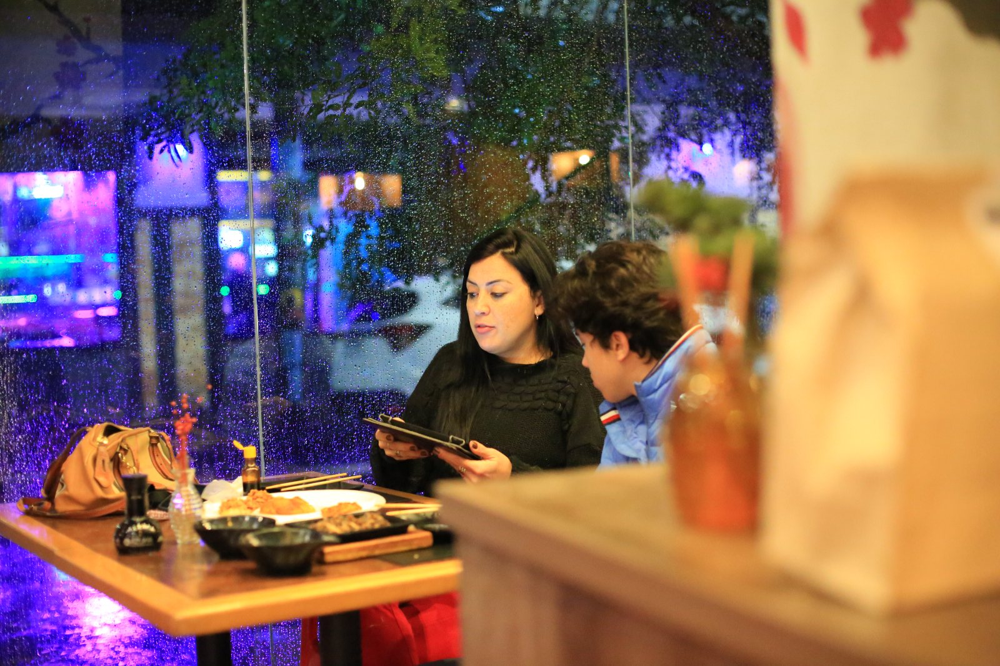
Mesas junto ao vidro, com cobertura. Boa para noites de chuva e para quem prefere um ar mais aberto.
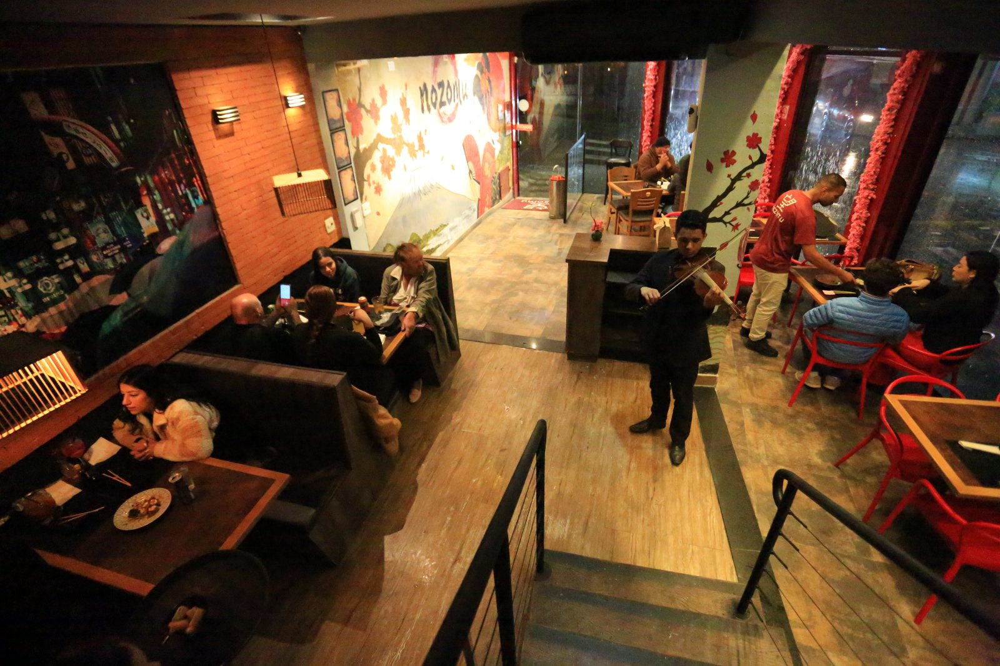
Mais silencioso e reservado, com vista para o salão. Ideal para grupos e comemorações.
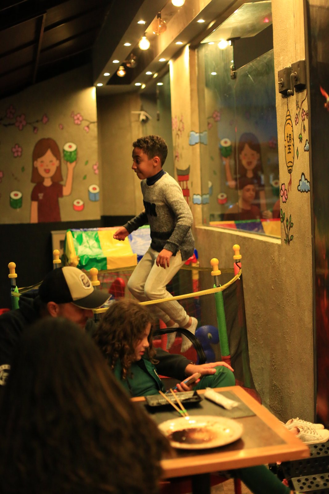
Brinquedoteca com pula-pula à vista das mesas: as crianças brincam enquanto os adultos jantam com calma.
Atendemos somente com reserva. Sem cobrança antecipada — nossa equipe confirma pelo WhatsApp.
Av. Paulo Afonso, 521 — Nova Petrópolis
São Bernardo do Campo · SP · 09770-351
Acesso pela Av. Paulo Afonso, a poucos minutos da Av. Kennedy e do Paço Municipal. Estacionamento na região.
Bairro Nova Petrópolis, próximo ao comércio da região. A fachada tem o mural do monte Fuji.